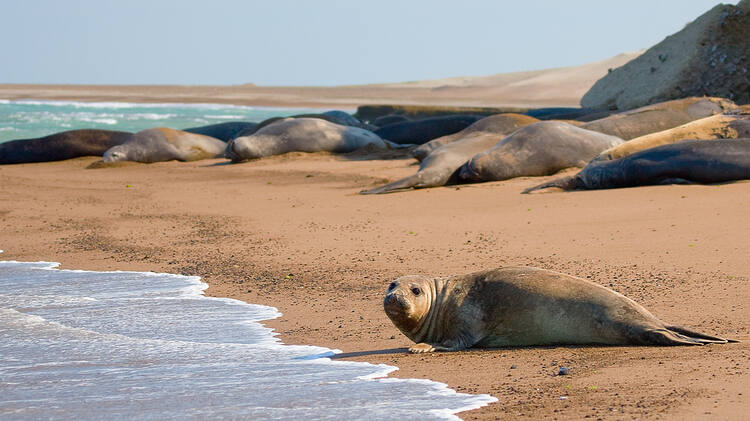

|
Rates expressed in Argentine pesos
|
Foreign Residents | National Residents | Chubutresidents |
| Seniors (12 years and older) | $ 1200.00 | $ 600.00 | $ 250.00 |
| Minors (6 to 11 years old) | $ 600.00 | $ 300.00 | $ 250.00 |
| 0 to 5 years | no fee | no fee | no fee |
| Retirees and Pensioners over 60 years old |
$ 1200.00 | $ 300.00 | $ 250.00 |
| Students of the Formal Educational System (ASEF) |
$ 1200.00 | $ 300.00 | $ 250.00 |
| Disabled and Ex-combatants from Malvinas |
$ 0.00 | $ 0.00 | $ 0.00 |
Península Valdés in Patagonia is a site of global significance for the conservation of marine mammals. It is home to an important breeding population of the endangered southern right whale as well as important breeding populations of southern elephant seals and southern sea lions. The orcas in this area have developed a unique hunting strategy to adapt to local coastal conditions. Península Valdés in Patagonia is a site of global significance for the conservation of marine mammals. It is home to an important breeding population of the endangered southern right whale as well as important breeding populations of southern elephant seals and southern sea lions. The orcas in this area have developed a unique hunting strategy to adapt to local coastal conditions.
